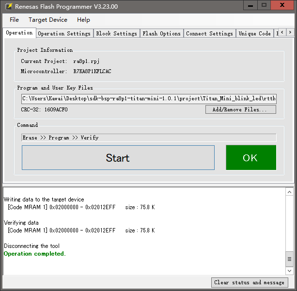

我将不使用rtthread studio，隐藏流程不利于排错。实际上是我编译不通过。
下载源代码
cd sdk-bsp-ra8p1-titan-mini-1.0.1\project\Titan_Mini_blink_led
scons
好了，现在在目录下就应该生成程序了
我没有ARM调试器，所以通过瑞萨软件下载
下载瑞萨编程软件 语言调成英文，中文网站会卡在cloudflare验证
按住板子上的usr(boot)键，再按reset。注意，全程都要按住boot键不然板子会自动重启。
接下来就能用编程软件下载了

下载成功后，松开boot键，按reset键，就能看到板子上的led灯闪烁了
scons可以生成cmake，cmake可以生成complier_commands.json来让clangd工作
scons --target=cmake
cmake -S . -B ../../build -G "Ninja"
之所以把build设在根目录，是因为你也不想换一个工程就要重新写.clangd配置文件吧
好吧，重写.clangd配置文件也非常简单罢了
根据数据手册和RASC的报告，能得到单片机的型号叫R7KA8P1KFLCAC
K: Dual Core, MIPI DSI/CSI is available
F: 1 MB (Code MRAM)
L: 0°C to 95°C
C: Standard Product
AC: LFBGA 289 pins
2MB SRAM
CPU0 TCM 256KB, CPU1 TCM 128KB
剩下的看 page11 的第四列